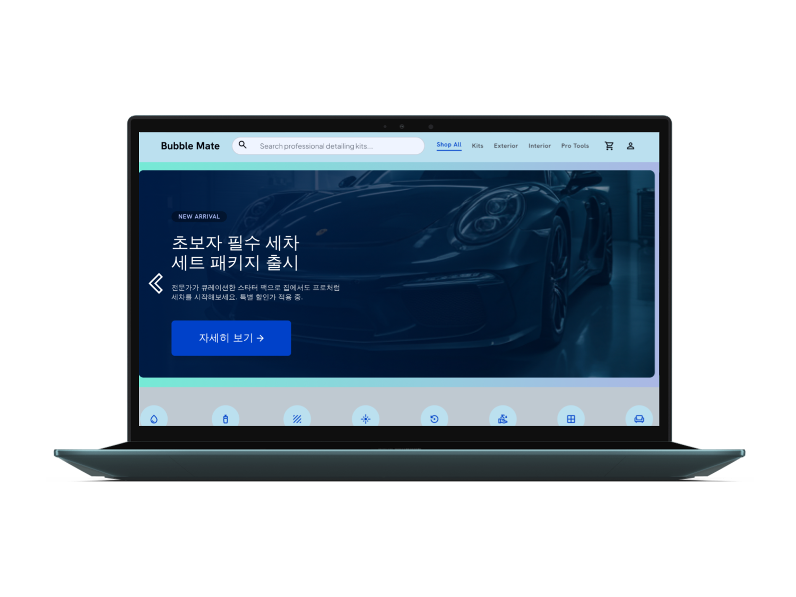
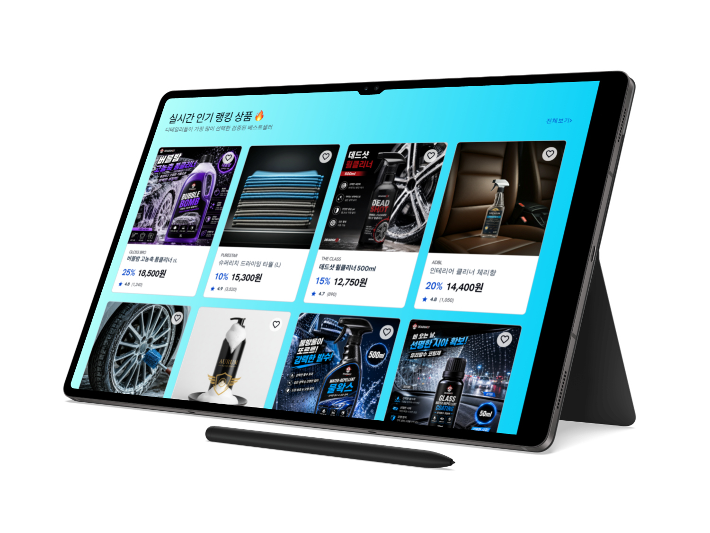
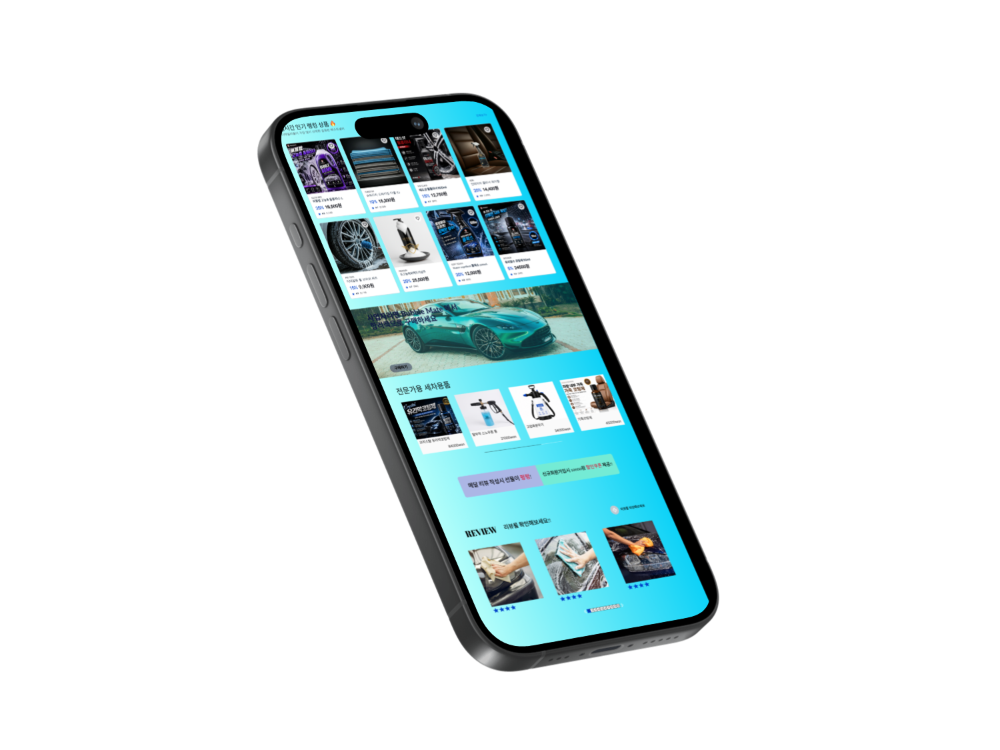

세차 매니아들을 위한 직관적이고 빠른 쇼핑 경험을 제공합니다. 프로페셔널한 디테일링 제품을 한 곳에서 만나보세요.

2년간의 디테일링 세차 실무 경험을 통해 파악한 '세차 매니아들의 구매 패턴'을 기반으로 타겟팅된 B2C 커머스를 기획했습니다. 단순 프론트엔드 구현을 넘어, 장바구니 포기율을 낮추고 결제 전환율(CVR)을 극대화하는 실무형 이커머스 플로우(Toss Payments 연동) 구축에 중점을 두었습니다.
UX/UI 디자인 - 피그마로 와이어프레임 및 고피델리티 디자인
AI 협업 (Claude) - AI와 협력하여 HTML, CSS, JavaScript 프론트엔드 UI 구현
기술 스택:
상품 정보 습득부터 장바구니 추가까지의 뎁스(Depth)를 최소화했습니다. 사용자가 제품 특성을 빠르게 인지하고 구매 버튼(CTA)을 클릭하도록 유도하는 전환율(CVR) 중심의 상세 페이지 UX입니다.
복잡한 결제 과정을 단축하기 위해 Toss Payments API를 도입했습니다. 매끄러운(Seamless) 결제 경험을 제공하여 최종 결제 단계에서의 이탈률(Drop-off Rate)을 방어합니다.
단순 상품 등록을 넘어, 매출 및 재고 데이터를 시각화(Visualization)하여 비즈니스 의사결정 속도를 높일 수 있도록 운영자(Back-office) 전용 UX를 설계했습니다.
초기 가입의 마찰(Friction)을 제거하기 위해 3대 소셜 로그인 API를 도입했습니다. 신규 고객 획득 비용(CAC)을 낮추고 MAU(월간 활성 유저)를 빠르게 확보하기 위한 기획입니다.
제품을 담았을 때 페이지 이동 없이 우측에서 열리는 사이드바(Drawer) UI를 적용했습니다. 구매 흐름의 끊김을 방지하여 장바구니 포기율(Cart Abandonment Rate)을 획기적으로 낮춥니다.
Bubble Mate는 모든 기기에서 완벽하게 작동하도록 설계되었습니다. 아래 탭을 통해 다양한 화면 크기에서의 레이아웃을 확인하세요.

